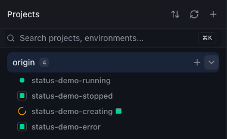
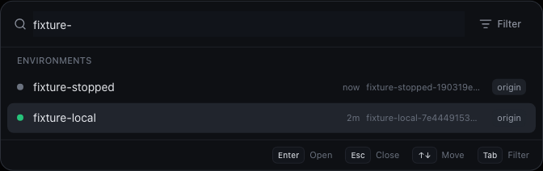
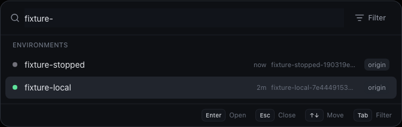
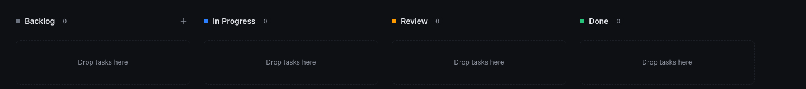
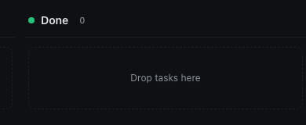

Design tasks / 00004
00004 · Drive status dots from the status tokens
Problem
index.css defines --color-status-running,
status-stopped, status-error and status-creating.
Before this change, StatusIndicator.tsx used the running and error status
tokens for label text. Its dots and spinners used hard-coded colors, except for the Error
dot, which used bg-failure after
task 00002. The Error dot now inherits
status-error, which shares the failure color. Other surfaces used
emerald-500 for their green status dots.
success): the app's one success colour. Diff additions,
successful tool calls, running status (--color-status-running) and the
merge-ready shimmer.
Find every instance
git grep -n -C 3 -E 'bg-(green|emerald)-[0-9]{3}' -- 'apps/web/src/**/*.tsx' ':!*.test.tsx'Read the surrounding conditions and labels to classify each hit.
Scope
| Where | What |
|---|---|
apps/web/src/components/environments/StatusIndicator.tsx
|
the dot and ring map |
apps/web/src/index.css:252-259 |
status token definitions; add a stopping token if the decision below keeps one |
apps/web/src/components/claude/ClaudeTmuxChatTab.tsx:1291 |
running dot, emerald-500 |
apps/web/src/components/federation/NodeSnapshotPreview.tsx:13 |
running dot, emerald-500 |
apps/web/src/components/browser/PreviewServicePicker.tsx:21 |
ready dot, emerald-500 |
apps/web/src/components/chat/SuborkGroup.tsx:21 |
finished dot, emerald-500 |
apps/web/src/components/settings/GlobalSettings.sections.tsx:2164 |
Web Client running dot and pulse, deferred with the settings surface |
apps/web/src/components/kanban/KanbanBoard.tsx:47 |
Done column dot, green-500 (column identity or status?) |
apps/web/src/components/graph-designer/GraphPromptEditor.tsx:336 |
budget bar: already using bg-success/80 beside bg-failure
|
Approach
-
Make
StatusIndicatoruse status tokens for dots and spinners. Inline labels inherit their status color where it provides sufficient contrast. - Point the other running, ready and finished dots at the same tokens.
- Decide the Stopping color (below) and the Kanban column dots, then apply.
- Confirm the working ring and the marker shapes (circle for worktree, square for container) are unchanged.
Decisions
One option is marked recommended. Record the option you chose in Notes.
Stopping color
Kanban column dots
Required evidence: before and after
Every slot needs a before image (captured first, before editing any code) and an
after image. Use the same profile, fixture data, theme, viewport and zoom for both.
Save PNGs under design/images/00004/ using the exact file names shown. See
How to capture.
Sidebar with environments in running, stopped, creating and error desktop 1440×900
Seed a profile so one row of each state is visible; crop the sidebar.


Project search status dots desktop 1440×900
Reload the app, open project search, filter to the fixture environments, and hover a status dot.


Kanban board column headers desktop 1440×900
Open a project Kanban board.


Kanban board column headers narrow 390×844
Open a project Kanban board.


Out of scope
- Shimmers and the working ring animation.
- Replacing the status tokens’ hex values (the documented token drift).
Verification
mise run test:logged -- --name web-typecheck -- bun run --cwd apps/web typecheck
NODE_ENV=test mise run test:logged -- --name status-indicator -- bun test ./tests/unit/components/StatusIndicator.test.tsx --parallel=2 --only-failures
NODE_ENV=test mise run test:logged -- --name env-status -- bun test --cwd apps/web ./src/components/environments --parallel=2 --only-failures
mise run format:check
mise run lint
React tests in this repo need NODE_ENV=test in build shells. Real-browser
check: use a throwaway dev:test profile named design-00004, never
a production instance.
Acceptance checklist
-
Before images captured on unmodified code for every slot below, and committed
under
design/images/00004/. - After images captured after the change, with the same profile, data, theme, viewport and file names, and committed beside the before images.
- Every image slot on this page shows a picture (the evidence badge reads “8 / 8”).
- I have looked at each pair and written what changed, and anything that did not change that should have, in Notes.
- Hits were classified in Notes, and each decision below is recorded with the option chosen.
-
Type-check and the owning tests pass (commands above);
mise run format:checkandmise run lintpass. - The browser check includes a page reload and, for layout-affecting changes, the narrow viewport.
- DESIGN.md or PRODUCT.md updated if needed: If a Kanban exception is kept, add one line to DESIGN.md Colors.
- Status set to Done on this page and in the index.
Notes
Hit classification and decisions
-
StatusIndicatorapplies a status color to its dot or spinner. Inline labels inherit that color except for Stopped and Stopping, which usemuted-foregroundfor small-text contrast. Chromium measured 5.97:1 on the dark sidebar surface for both 12 px labels, up from 3.85:1. Stopping keeps the stopped-gray spinner. -
The Claude tmux and node snapshot running dots, preview service Ready dot, and subork
Finished dot now share
status-runningas the all-clear green. -
The Web Client settings running dot still uses
bg-emerald-500with anemerald-400pulse. Settings indicators, including preview publication availability, are deferred. Other hits include connection and sync indicators, Linear column colors, and accents for buttons, messages, and usage charts. -
The Kanban Done dot and the matching card stripe identify a column. All four columns keep
their category colors. This exception is recorded in
DESIGN.md. -
The graph prompt budget is an outcome indicator. Its in-budget fill already used
bg-success/80and its over-budget fill usedbg-failure.
Image pairs
Playwright captured the sidebar and Kanban baseline views at b2c91abb9 before
source edits. Those pairs used the isolated headless design-00004 fixture, dark
theme, 100% zoom, and device scale factor 1. The renderer was reloaded in each pass.
- Sidebar, desktop. The running worktree uses a circle and the container rows use squares. Creating shows a spinner. The sidebar markers show machine identity, so this pair is a control for the row presentation. The focused marker browser test exercises the circle and square working rings in motion.
-
Project search, desktop. The search dialog
covers its hover tooltip, so the pair shows the dot-only results from the production
search surface after reload. Both captures used the same running and stopped worktrees in
the isolated
design-00004-reviewprofile at 1440 × 900. For the before view, Playwright served the original indicator fromb2c91abb9to the search page. - Kanban, desktop. All four headers retain their category dots. The sidebar was collapsed to fit the four columns in one view.
- Kanban, narrow. Swiping across the four columns still reaches Done. Both captures show Done at the same scroll position with its green category dot.